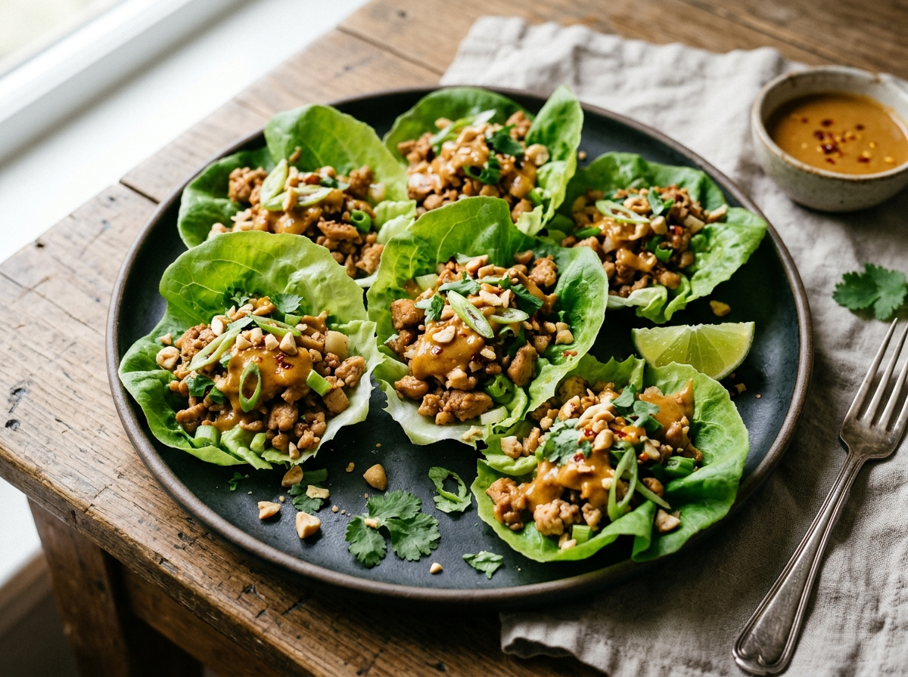
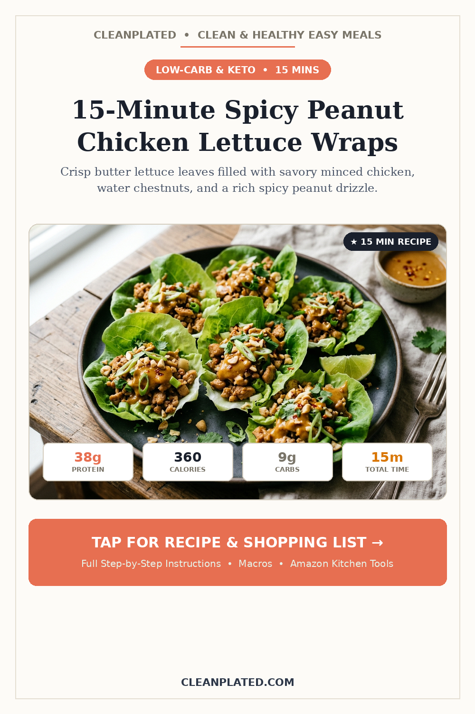
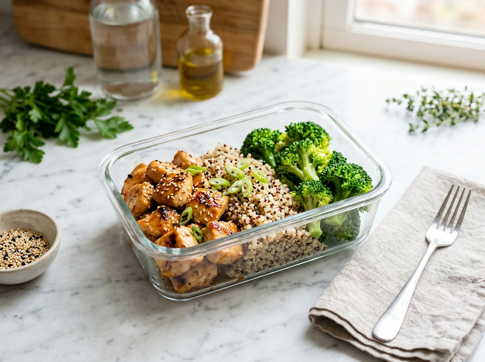

15-Minute Spicy Peanut Chicken Lettuce Wraps
Crisp butter lettuce leaves filled with savory minced chicken, water chestnuts, and a rich spicy peanut drizzle.

15-Minute Spicy Peanut Chicken Lettuce Wraps
Better than P.F. Chang's and ready in half the time it takes for takeout delivery. These Spicy Peanut Chicken Lettuce Wraps feature lean ground chicken sautéed with crunchy water chestnuts, garlic, and fresh scallions, tucked inside crisp butter lettuce cups. Drizzled with an addictive 4-ingredient spicy peanut sauce made with natural peanut butter, tamari, lime juice, and sriracha.
Ingredients
Tap items to check off while cooking or shopping:
Essential Equipment Used:
Step-by-Step Instructions
-
1
Mix Peanut Sauce
In a small bowl, whisk natural peanut butter, soy sauce, lime juice, sriracha, and 1 tbsp warm water until velvety smooth and pourable.
-
2
Brown the Ground Chicken
Heat a skillet over medium-high heat with a light spray of avocado oil. Add ground chicken, breaking it apart with a wooden spoon. Cook 4–5 minutes until browned and cooked through.
-
3
Add Aromatics & Crunch
Add minced garlic, grated ginger, and diced water chestnuts. Stir-fry for 2 minutes until aromatic. Remove from heat and stir in 2 tbsp of the prepared peanut sauce.
-
4
Assemble & Serve
Spoon warm chicken filling generously into crisp butter lettuce cups. Drizzle remaining peanut sauce over the top, garnish with crushed peanuts and chopped cilantro, and serve immediately.
Chef's Meal Prep & Storage Pro-Tip:
Store in airtight glass meal prep containers in the refrigerator for up to 4 days. Reheat in the air fryer at 350°F for 3 minutes to restore that restaurant-crisp texture!

Love this recipe? Save it to Pinterest!
Save this high-protein 20-minute dinner to your healthy dinner board so you never wonder what to make on busy weeknights.
📌 Save Pin to PinterestYou May Also Love

Meal Prep & Bowls ⏱️ 20 mins